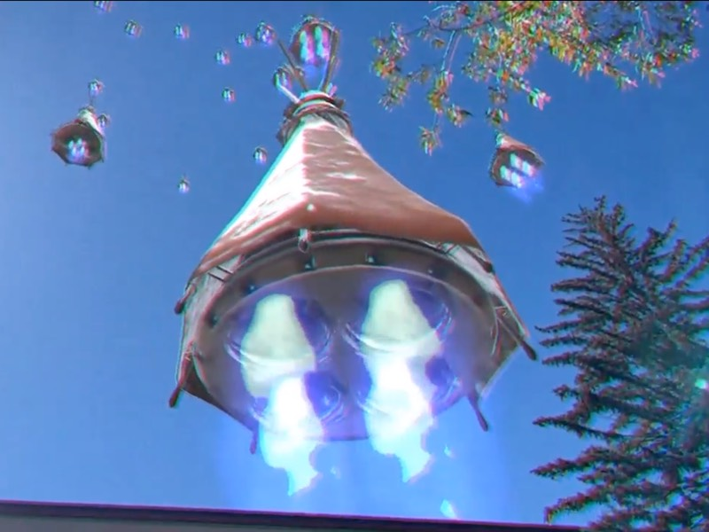
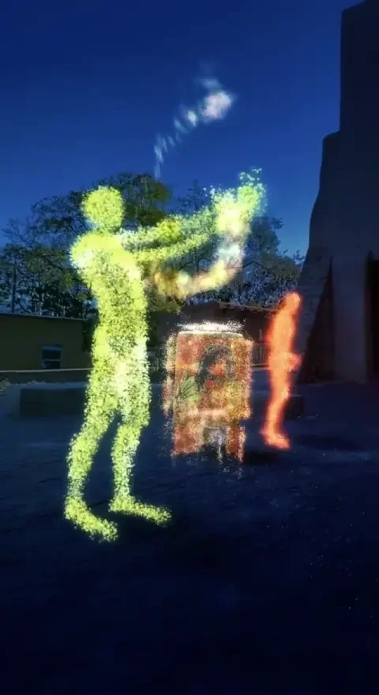
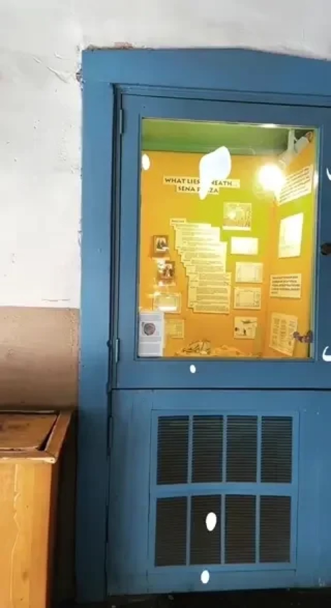
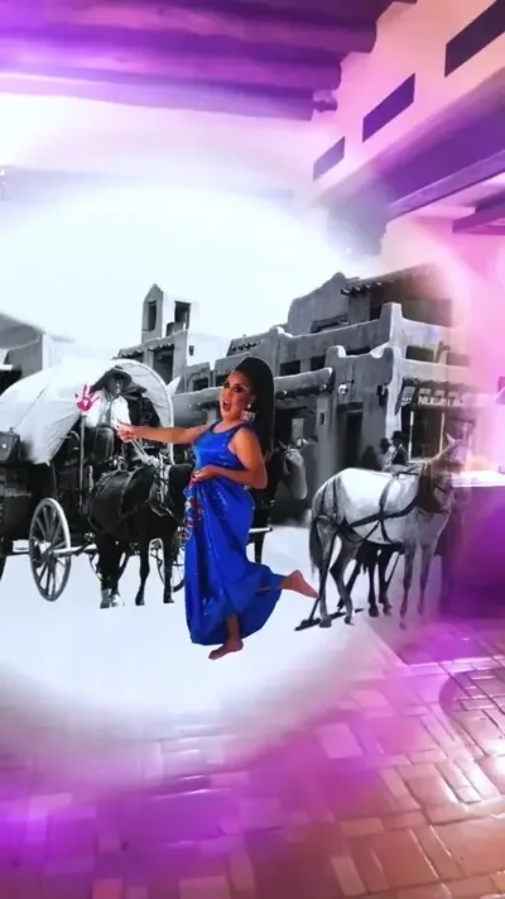

A new way of exploring the art and history of Santa Fe
Ojos Diferentes is a Webby-nominated Snap AR project commissioned by the City of Santa Fe Arts & Culture Department. It brings ten Indigenous, Norteño, and Chicana artists to eight locations across downtown Santa Fe. Each one reinterpreted a historic site, monument, or overlooked corner of the city, alongside historical research by City Historian Valerie Rangel.
I was the lead engineer and designed the architecture for the tour. We worked with each artist to turn their idea into a spatial experience, using motion capture, 3D scanning, modeling, illustration, recording sessions, and on-site testing as each piece needed.
The pieces include Nawitlanpa Teotl by PAZ (Mapitzmitl) and Crystal Xochitl Zamora, Plight of the Recon Watchmen by Virgil Ortiz, DRAGing Time Travel with Lady Shug, A River Through Time by Ehren Kee Natay, MuggZ's Plight by Cliff Fragua, Watch How Godzilla Aunt Eats the Cowboys by Artemisia Romero y Carver, and Jornada Del Muerto by Olivia Romo.



